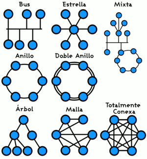

Red de computadoras
Una red de computadoras (también llamada red de ordenadores o red informática) es un
conjunto de equipos nodos y software conectados entre sí por medio de dispositivos
físicos que envían y reciben impulsos eléctricos, ondas
electromagnéticas o cualquier otro medio para el transporte de datos, con la finalidad de compartir información,
recursos y ofrecer servicios.

Como en todo proceso de comunicación, se requiere de:
-
Emisor: es uno de los conceptos de la comunicación, de la teoría de la
comunicación y del proceso de
información que emite o envía el mensaje a través de un canal hasta un receptor, perceptor y/u observador.
-
Mensaje: el objeto de la comunicación. Está definido como la información o
enunciado verbal que el emisor
envía al receptor a través de un canal de comunicación o medio de comunicación determinado (por ejemplo, el
habla o la escritura).
-
Medio: instrumento o forma de contenido tecnológico por el cual se realiza el
proceso de comunicación.
Usualmente se emplea el término para hacer referencia a los medios de comunicación de masas, sin embargo,
otros medios de comunicación, como el teléfono, no son masivos sino interpersonales.
-
Receptor: agente (persona o equipo) que recibe el mensaje, señal o código emitido
por un emisor, transmisor
o enunciante; es el destinatario que recibe la información.
|
#
|
Capas
|
Unidad de intercambio
|
|
7.
|
Capa de aplicación
|
APDU
|
|
6.
|
Capa de presentación
|
PPDU
|
|
5.
|
Capa de sesión
|
SPDU
|
|
4.
|
Capa de transporte
|
TPDU
|
|
3.
|
Capa de red
|
Paquete de red
|
|
2.
|
Capa de enlace de datos
|
Trama de red (Marco / Trama)
|
|
1.
|
Capa física
|
Bit
|